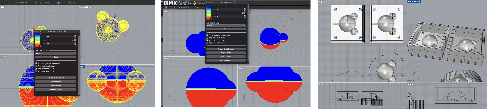
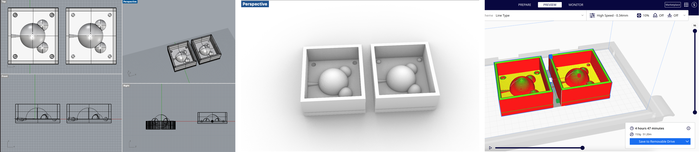

Molding and casting pt 2
Assignment 6
Create and Design a mold 🐻


To design the CAD for the silicon mold, I conducted the "Draft angle analysis" to figure out the parting line and made a mid draft curve first. Then I designed the outside part of the model it self, which has a V shaped hole so that later plaster can be put in there.
3D Print the mold 🖨

First, I printed a small modle to see how it look, and then resize the mold to print an actual for the casting. The 3D printed model was perfect and took almost 5 hours to print it. I used the Dremel printer at the Mill.
Create the Silicon Mold 🥛

With the mixture of the Ooomoo, I poured them in a different cup and mix them together. It became thicker, so I poured them in the mold that I designed. And I waited for 6 hours to make the silicon mold to be thicken.
Casting Plaster 🐻❄️


It was a bit challenging to take it out. I tried not to tear the silicon, and I made it.
Final Deliverable
This is the final casted design that I made. I eventually failed to create the perfect shape that I designed for the mold. The mold was not completely filled with the plaster. After my initial and second try, I couldn't do more experiments because I didn't have enough plaster and also time. However, I learned a few steps I need to be aware of for my next molding and casting work.

What I learned
- Make the hole for plaster more larger, (especailly the enterance of the hole) so that the plaster can go through well.
- Plaster will be thicken in a quick time, so be aware the time.
- Make the mold completly filled with the plaster.
- Make supporter more stable (rubber band is not enough!!), so the plaster will not leak.
Appendix
Link to the modified mesh Stl file (stl) by. Soo Hwang Link to the Lamp Innered File (stl) by. Soo Hwang